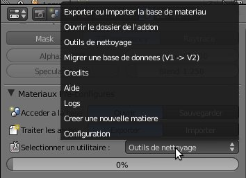
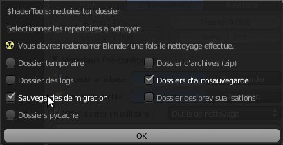

|
Les Outils de nettoyage :
|
|
Ce module vous permet de nettoyer le répertoire du ShaderTools en quelques clics et sans risque.
|
|
Cliquez sur la liste des 'Utilitaires' de l'interface du ShaderTools puis 'Outils de nettoyage' pour accéder
à ce module :
|
|

|
|
Une nouvelle fenêtre devrait s'ouvrir vous proposant de nettoyer les différents répertoires de l'add-on. Il vous
suffit de cocher les cases des éléments à supprimer puis de valider comme dans l'exemple ci-dessous :
|
|

|
-
Dossier temporaire : l'add-on utilise ce dossier pour stoquer temporairement des éléments (export...).
-
Dossier des logs : il s'agit du répertoire contenant le log de l'état des actions du ShaderTools (en bref
c'est le fichier qui s'affiche lorsque vous allez dans 'Utilitaires' puis 'Logs'). Ce fichier sera donc supprimer.
-
Sauvegardes de migration : Lorsque vous effectuez une migration de la base ou encore un import-export de
la base de matériaux, une copie de l'ancienne base est faites pour éviter les erreurs humaines. Assurez-vous
avant de faire cela de bien réfléchir à 2 fois et surtout avoir au moins une copie de sauvgarde sans quoi en
cas de problème vous perdrez toutes ces données.
-
Dossiers pycache : il s'agit en fait des dossiers compilés pour être lisible par python (grâce à Blender3D
qui fait office de passerelle). Cependant il m'est arrivé de voir que ces fichiers ne se mettaient pas
systématiquement à jour. Par conséquent j'offre la possibilité de les supprimer en toute sécurité au cas où cela
pourrait être utile. Ils seront recréer par Blender3D au prochain lancement.
-
Dossier d'archives (zip) : il s'agit du répertoire contenant les archives déjà utilisées au format zip.
-
Dossier d'autosauvegardes : Suivant la façon dont votre configuration actuelle est paramétrée une auto-sauvegarde
des fichiers importants sont stockés dans ce répertoire (voir la rubrique 'L'Auto-sauvegarde' pour plus de détails).
La sauvegarde automatique est un bon moyen en cas de problème pour espérer retrouver vos données. Cependant c'est
aussi une fonction gourmande en espace disque (suivant la taille de votre base). Pour cette raison vous pouvez
en cochant cette case vider le contenu de ce répertoire.
-
Dossier des previsualisations : il s'agit en fait du dossier qui vous affiche la liste des matériaux
(celle que vous obtenez en allant dans 'Ouvrir' puis le bookmarks 'Base Materiaux'). Vous pourrez donc supprimer
son contenu en cochant la case.
|